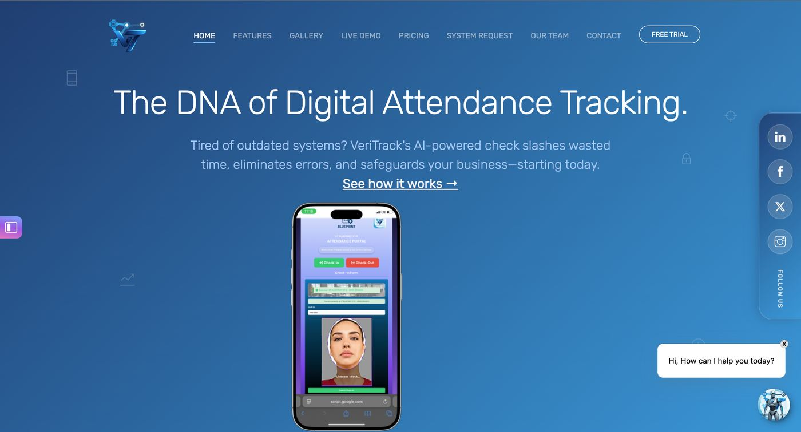
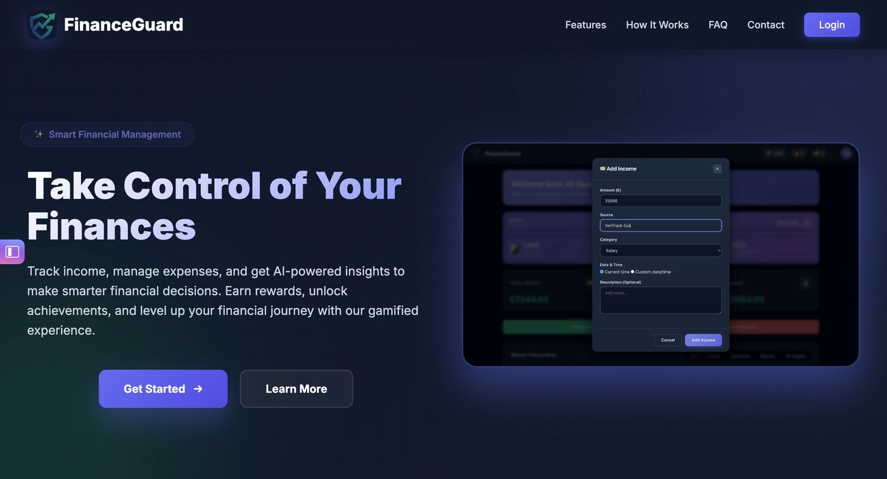
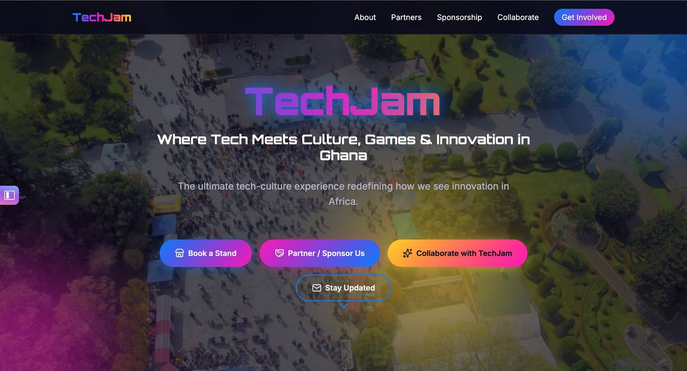
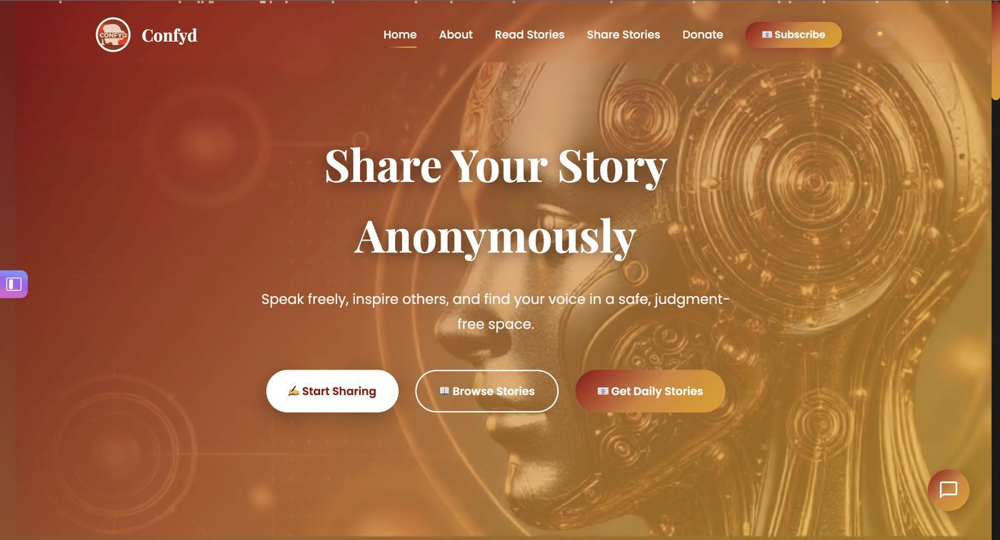
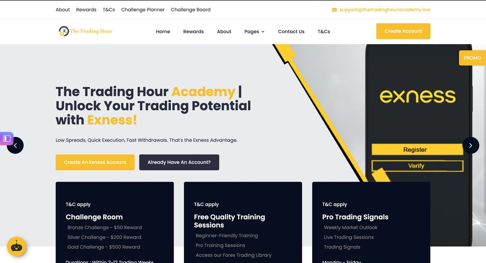
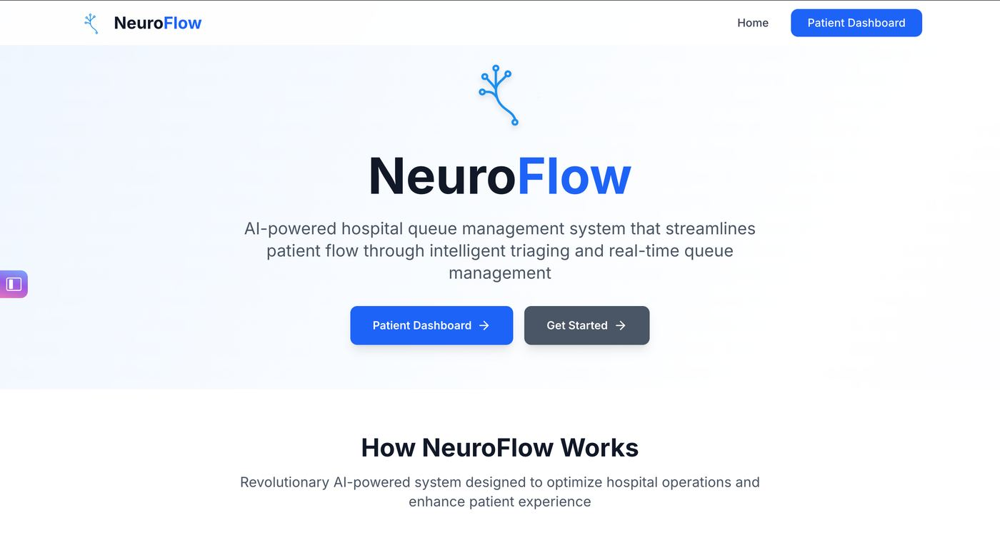
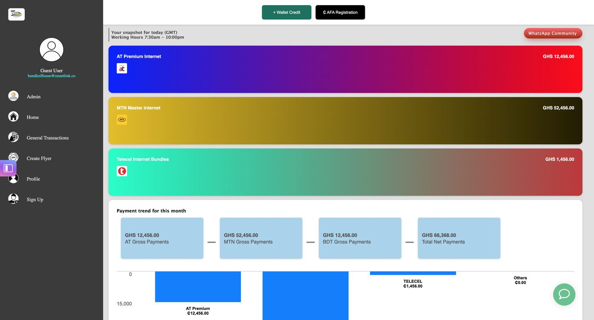
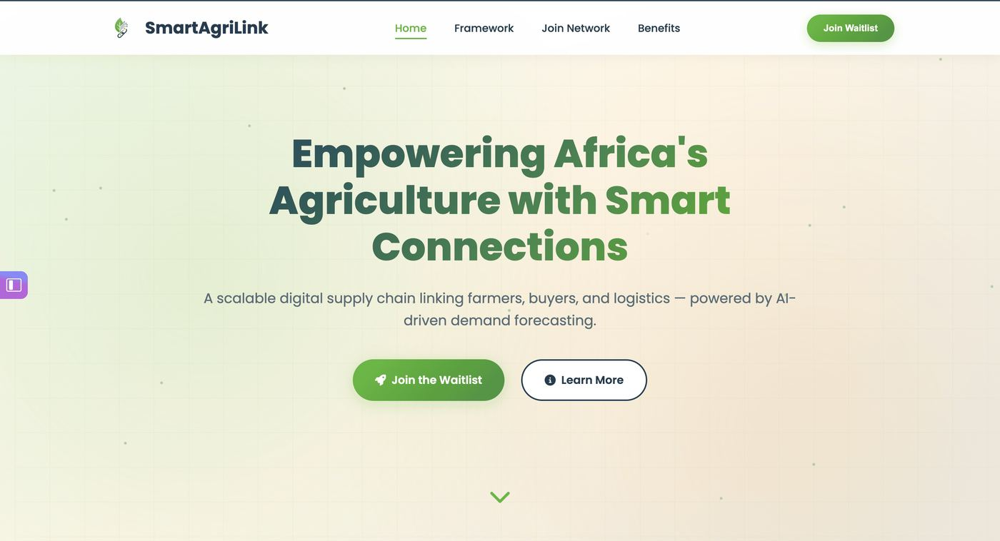
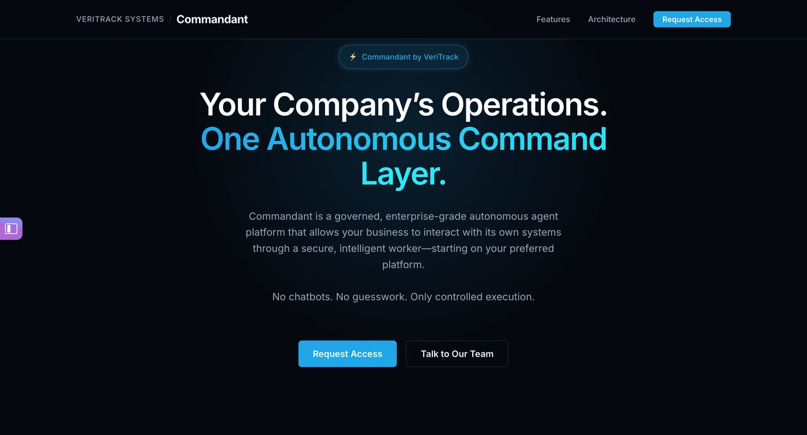

Public speaking
Keynotes and workshops on systems, building software, and careers in technology.
Book for an event →Systems Architect · Public Speaker · CEO, VeriTrack Systems
I design, build, and scale reliable systems, and I train people and teams to compete globally. I lead VeriTrack Systems and, through SmartLinkco, I build websites and systems for clients.
Real systems in use, starting with VeriTrack.
Platforms and client systems designed to be operated, not only demoed.
Coaching for people moving from tutorials into professional work.

Keynotes and workshops on systems, building software, and careers in technology.
Book for an event →Architecture for platforms such as VeriTrack and for the systems SmartLinkco delivers to clients.
View advisory →SmartLinkco builds websites and operational systems for clients who need something they can run.
Start a brief →Platforms and sites Stephen has designed, built, or led.

Ghana SaaS for photo-verified, geofenced staff attendance. Stephen leads VeriTrack Systems at veritrack.cloud.
Visit platform →
Personal finance application for tracking income, expenses, and budgeting goals.
View app →
Hub for TechJam, a Ghana tech-culture festival mixing technology, gaming, and creativity.
Visit festival →
Anonymous space for mental wellness, storytelling, and community support.
Visit site →
Learning site for financial markets, technical analysis, and trading.
Learn more →
Hospital queue system from the ATF challenge, built to organise patient flow.
View prototype →

Agriculture platform connecting farmers with markets, resources, and farm data.
Visit platform →
Administration portal for VeriTrack, used for access control and reporting.
Open portal →Talks, showcases, and working sessions.


Endorsements
Stephen's ability to translate complex architectural concepts into actionable business strategies is unmatched. He transformed our entire customer interactions and retention flow. And not to mention, his timing and availability👌🏽.
I am incredibly proud of you and your team 🫶🏽 You approach every opportunity and piece of advice with such zest and grace. These qualities will continue to open doors to countless opportunities for you. Congratulations on all your accomplishments! Many more to come👌🏽🔥
Beyond the technical side, Stephen genuinely cares about your growth. You feel supported, accountable, and confident knowing someone with both technical depth and real-world perspective is guiding you.
A visionary architect who builds for stability and scale. VeriTrack has been running seamlessly under his design since inception.
Join a coaching program, or send a brief for a website or system.
Start now